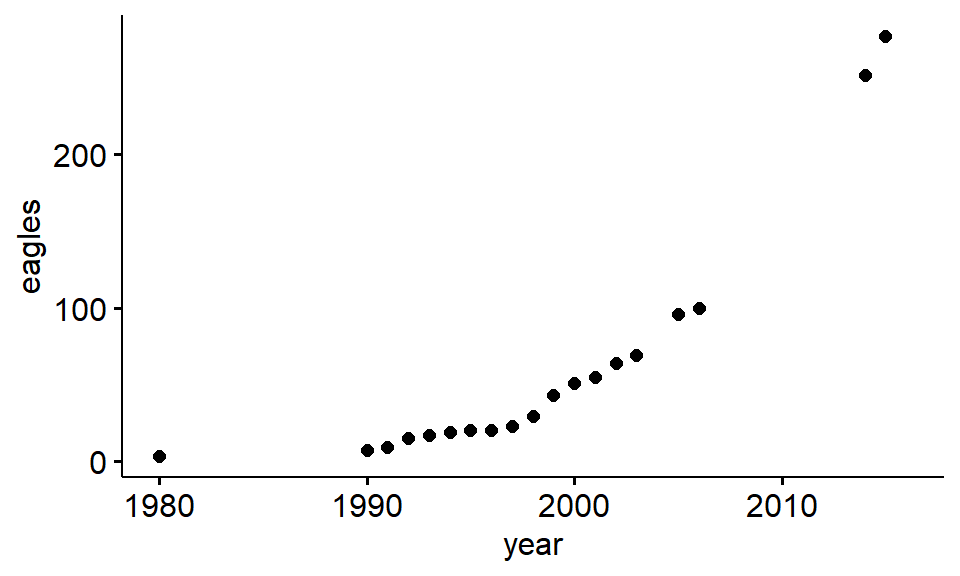

Chapter 7 Loading data into R from a package
7.1 Introduction
Working in R is all about working with data. There are many ways to get data into R, and RStudio has some helpful tools for this process. In this exercise we’ll go over the common ways that data get’s brought into R and how to download external packages to get datasets and functions. These include data
- pre-loaded in R
- loaded in R “packages”
- typed into a script
- loaded from a spreadsheet using RStudio’s data import tools
- loaded from a spreadsheet using just R code
While discussing these various routes for data to get into R we’ll also talk a bit about how R works with data and learn data related vocab.
7.1.1 Functions
- head(), tail()
- summary()
7.1.2 Datsets
- datasets::iris
7.1.3 Packages
7.1.4 Key terms
- package
- dataframe
7.2 Data pre-loaded in R
R comes with a number of datasets ready to use. A famous dataset frequently used in statistics is a set of measurements made on three species of irises and used to demonstrate some statistical principles by geneticist and statistician R.A. Fisher.
We can put the iris dataset into R’s working memory using the data() command
data(iris)We can see these data simply by type the word “iris” in the console and pressing enter. The dataset is too big for the screen probably and you’ll just see a bunch of numbers flash by. You can get just a glimpse of the data by using the head() command, which will show you the first six or so rows of data.
head(iris)## Sepal.Length Sepal.Width Petal.Length Petal.Width Species
## 1 5.1 3.5 1.4 0.2 setosa
## 2 4.9 3.0 1.4 0.2 setosa
## 3 4.7 3.2 1.3 0.2 setosa
## 4 4.6 3.1 1.5 0.2 setosa
## 5 5.0 3.6 1.4 0.2 setosa
## 6 5.4 3.9 1.7 0.4 setosa(You can all use the tail() command to see the last 6 rows if you want.)
We can see that there are five rows of data. Three contain information about the length and width of the parts of the flower (Sepals and Petals) and the last holds the names of the species.
We can get a sense for these numbers by using the summary() command on the data, which will give us the mean and other summary statistics
summary(iris)## Sepal.Length Sepal.Width Petal.Length Petal.Width
## Min. :4.300 Min. :2.000 Min. :1.000 Min. :0.100
## 1st Qu.:5.100 1st Qu.:2.800 1st Qu.:1.600 1st Qu.:0.300
## Median :5.800 Median :3.000 Median :4.350 Median :1.300
## Mean :5.843 Mean :3.057 Mean :3.758 Mean :1.199
## 3rd Qu.:6.400 3rd Qu.:3.300 3rd Qu.:5.100 3rd Qu.:1.800
## Max. :7.900 Max. :4.400 Max. :6.900 Max. :2.500
## Species
## setosa :50
## versicolor:50
## virginica :50
##
##
## Note that the last column doesn’t contain numbers but rather names, so R counts up how many of each species name there is.
If we want to be reminded of the names of each column we can use the names() function
names(iris)## [1] "Sepal.Length" "Sepal.Width" "Petal.Length" "Petal.Width"
## [5] "Species"Looking at R data in the console isn’t always very easy, so one thing you can do is use the View() command. This will bring up the data in a spreadsheet like viewer as a new tab in the script editor, similar to this.
pander::pander(iris[1:10,])| Sepal.Length | Sepal.Width | Petal.Length | Petal.Width | Species |
|---|---|---|---|---|
| 5.1 | 3.5 | 1.4 | 0.2 | setosa |
| 4.9 | 3 | 1.4 | 0.2 | setosa |
| 4.7 | 3.2 | 1.3 | 0.2 | setosa |
| 4.6 | 3.1 | 1.5 | 0.2 | setosa |
| 5 | 3.6 | 1.4 | 0.2 | setosa |
| 5.4 | 3.9 | 1.7 | 0.4 | setosa |
| 4.6 | 3.4 | 1.4 | 0.3 | setosa |
| 5 | 3.4 | 1.5 | 0.2 | setosa |
| 4.4 | 2.9 | 1.4 | 0.2 | setosa |
| 4.9 | 3.1 | 1.5 | 0.1 | setosa |
Note, however, that unlike a spreadsheet you cannot edit the data.
If you want to know more about a package, you can look at its help file, eg “?iris.” These will often give you a fair bit of detail about what each column means, where the data are from, and may even have examples R functions applied to the data (though these can be rather obtuse, as is the case for the iris data).
7.2.1 Preview: Plotting boxplots
Plotting will be covered in depth in a subsequent exercise, but here’s a glimpse of how we plot things in R:
plot(Petal.Length ~ Species, data = iris)This code creates a series of boxplots of the petal lengths of each species of flower.
7.3 Loading data from R packages
Base R however is surrounded by a universe of extensions built by statistician, programmers, academics and businesses that use R for analyses. Some of these are fairly standard and are downloaded along with base R and just need to be explicitly installed. Other have to be downloaded from the internet and installed. Most packages contain data in order to demonstrate what they do.
7.3.1 Loading a package contained in base R
One package that is automatically downloaded but not automatically installed with base R is the “MASS” package, which stands for “Modern Applied Statistics in R”; S is the software that preceded R. We can install this package and make it functionally using the library() command
library(MASS)The MASS package has a biological dataset called “crabs” that you can put into working memory using data(crabs). We can then look at it using head(),View(), tail(), summary(), etc. We can find out more about the dataset using the help file, accessed via ?crabs
Question 1.What does the “FL” column mean in the crabs dataset? 1.What is the mean of the FL column?
7.3.2 Preview: Plotting scatter plot
We can plot the relationship between the FL and RW variables using a scatter plot.
plot(FL ~ RW, data = crabs)
7.4 Learning about data in R
When data is being worked with in R, it lives in a place called the workspace. The workspace is not immediately transparent to you while working in R. It lives behind the scenes in what is essentially R’s working memory. We can see what’s on R’s mind using the ls() command
ls()## [1] "crabs" "iris" "x"We can see our two datasets that we loaded using the data() command.
We can add new things to the work space using an R command like this
my.mean <- mean(c(1,2,2))Where “<-” is called the assignment operator. This function assigns the output of an R command or R function to an R object in R’s working memory, the workspace.
We can check again what’s on R’s mind using a command ls(), which stands for “list”
ls()## [1] "crabs" "iris" "my.mean" "x"We can see that we added my.mean. We can see what my.mean is by typing its name in to the console
my.mean## [1] 1.666667We can also learn more about is using the is() command
is(my.mean)## [1] "numeric" "vector"Here we get a big of R lingo: R tells use “numeric”, which means it contain numeric data (numbers), and “vector”, which is one of several types of R object
R objects can be just about anything. We can assign letter to an R object like this
my.abc <- c("a","b","c")Note that we have the letter each surrounded by quotes, and all 3 of them within c(…)
If you call up “my.abc” from the console, you will get back the three letter. Now see what is(my.abc) says
is(my.abc)## [1] "character" "vector" "data.frameRowLabels"
## [4] "SuperClassMethod"There’s a lot that comes out, but the first one says “character”, indicating that yo have character data - data made up of text.
If you type ls() again what happens?
ls()## [1] "crabs" "iris" "my.abc" "my.mean" "x"We now see both of our R objects and the two datasets.
If we call is() on one of the dataset what do we is?
is(crabs)## [1] "data.frame" "list" "oldClass" "vector"Several things get spit out, but the first one is important: “data.frame” Dataframes are fundamental units of analysis in R. Most of the data you will load into R and work within R will be in a dataframe.
Another function that tells about something in the the workspace is str(), which stands for structure. It provides info about what types of variables are in each column, and provides some sample output similar to head(), but oriented differently.
str(crabs)## 'data.frame': 200 obs. of 8 variables:
## $ sp : Factor w/ 2 levels "B","O": 1 1 1 1 1 1 1 1 1 1 ...
## $ sex : Factor w/ 2 levels "F","M": 2 2 2 2 2 2 2 2 2 2 ...
## $ index: int 1 2 3 4 5 6 7 8 9 10 ...
## $ FL : num 8.1 8.8 9.2 9.6 9.8 10.8 11.1 11.6 11.8 11.8 ...
## $ RW : num 6.7 7.7 7.8 7.9 8 9 9.9 9.1 9.6 10.5 ...
## $ CL : num 16.1 18.1 19 20.1 20.3 23 23.8 24.5 24.2 25.2 ...
## $ CW : num 19 20.8 22.4 23.1 23 26.5 27.1 28.4 27.8 29.3 ...
## $ BD : num 7 7.4 7.7 8.2 8.2 9.8 9.8 10.4 9.7 10.3 ...Note that the variables “sp”, which stands for “Species”, and “sex” are followed by the word “Factor.” A factor variable is something that is or is summarized as discrete categories. For the species factor, there are two levels: the “B” species and the “O” species.
7.5 Load data from an external R package
Many packages have to be explicitly downloaded and installed in order to use their functions and datasets. Note that this is a two step process: 1. Download package from internet 1. Explicitly tell R to load it
7.5.1 Step 1: Downloading packages
There are a number of ways to install packages. One of the easiest is to use install.packages(). Note that it might be better to call this “download.packages” since after you install it, you also have to load it!
Well download a package used for plotting called ggplot2, which stands for “Grammar of graphics”
install.packages("ggplot2")Often when you download a package you’ll see a fair bit of red text. Usually there’s nothing of interest hear, but sometimes you need to read over it for hints about why something didn’t work.
7.5.2 Step 2: Explicitly loading a package
The install.packages() functions just saves the package software to R; now you need to tell R “I want to work with the package”. This is done using the library() function. (Its called library because another name for packages is libraries)
library(ggplot2)ggplot2 has a dataset called “msleep” which has information on the relationship between the typical size of a species and its brain weight, among other things
We load the data actively into R’s memory using data(), and can look at the column names using names()
data(msleep)
names(msleep)## [1] "name" "genus" "vore" "order"
## [5] "conservation" "sleep_total" "sleep_rem" "sleep_cycle"
## [9] "awake" "brainwt" "bodywt"We can now explore this data set as before using summary(), str(), etc.
Another useful command when you are working with a new dataset is dim(). This tells you the dimension of the dataframe
dim(msleep)## [1] 83 117.5.3 Preview: plotting with ggplot2
ggplot2 is a powerful plotting tool that has become standard among scientists, data scientists, and even journalists. Here’s a quick way to make a plot in ggplot2 using its qplot() function (qplot = quick plot, not to be confused with qqplot). Note that the qplot() function only works if you have ggplot2 downloaded and installed.
A powerful aspect of ggplot is the fact that it can easily be used to modify plots. Here, we use the arguement “color =” to color code the data points based on their IUCN red list status.
qplot(y = brainwt, x = bodywt, data = msleep, color = conservation)## Warning: Removed 27 rows containing missing values (geom_point).
The animals in this data vary in size from mice to elephants and so a lot of the data points are scrunched together. A trick to make this easier to see is to take the log of the brainwt and bodywt variable. In R, we can do this on the fly like this using the log() command
qplot(y = log(brainwt), x = log(bodywt), data = msleep, color = conservation)## Warning: Removed 27 rows containing missing values (geom_point).7.6 Loading data from an R script
So far we have only looked at dataset that are already formatted into dataframe by somebody for us. Now we want to look at how to set up datasets ourselves. When datasets are small its possible to enter them more or less directly into R by typing out all of the numbers in a script. This only works well for when datasets are small; even when datasets are small its best to keep them separate from your R code in a spreadsheet file. However, its useful to know how to load data this way; even when an exercise in this book loads data from a package or spreadsheet I will also often include the code to load it directly just in case there is an issue with download the package or file.
7.6.1 The eagles have landed - in your R workspace
In a subsequent exercise we will practice using data on the number of eagles in Pennsylvania and other states in the USA. We can load this data into R by making R objects, and then turning these objects into a dataframe.
7.6.1.1 Step one: Build R objects
First, we’ll use the assignment operator (“<-”) to create an R object called “year” that lists the years from 1980 through 2015 for which the number breeding pairs of eagles in Pennsylvania, USA, is known.
year <- c(1980,1981,1982,1983,1984,1985,1986,1987,1988,1989,
1990,1991,1992,1993,1994,1995,1996,1997,1998,1999,
2000,2001,2002,2003,2004,2005,2006,2007,2008,2009,
2010,2011,2012,2013,2014,2015,2016)A quick trick to do this much fast is
year <- c(1980:2016)Second, we’ll create an object called “eagles” with the number of breeding pairs (male and females paired up for making baby eagles) recorded each year. Note that most years in the 1980s are skipped because there is not data available. When data are missing we use NA. (Note that this is just NA, with not quotes around it).
eagles <- c(3, NA, NA, NA, NA, NA, NA,NA,NA,NA,
7, 9, 15, 17, 19, 20, 20,23,29,43,
51,55, 64, 69, NA, 96,100,NA,NA,NA,
NA,NA, NA, NA,252,277, NA)7.6.1.2 Step two: Build dataframe
We can then turn these two separate R objects into a dataframe
eagle.df <-data.frame(year, eagles)7.6.2 Looking at the eagle data
We can check that we have this R object by using the ls() command.
ls()## [1] "crabs" "eagle.df" "eagles" "iris" "msleep" "my.abc"
## [7] "my.mean" "x" "year"And we can confirm that its a dataframe using is()
is(eagle.df)## [1] "data.frame" "list" "oldClass" "vector"summary() will give us basic info on PA’s eagles
summary(eagle.df)## year eagles
## Min. :1980 Min. : 3.00
## 1st Qu.:1989 1st Qu.: 18.00
## Median :1998 Median : 29.00
## Mean :1998 Mean : 61.53
## 3rd Qu.:2007 3rd Qu.: 66.50
## Max. :2016 Max. :277.00
## NA's :18Note that in the “eagles” columns it tells you the number of NAs (missing values). The summary() readout quickly tells us that the eagle population has changed dramatically.
7.6.2.1 Preview: plotting the eagle data
We can plot the data in ggplot2 using qplot(). However, there is an excellent package that adds additional functionality to ggplot called ggpubr. This is fairly common in R: you have packages that add functions to R, and packages that add functions to other packages.
We can install ggpubr using install.packages(). Note that the name of the package, ggpubr, is in quotes.
install.packages("ggpubr")ggpubr requires another package, magrittr, which R tells you about in read text. When a package requires another package, its called a dependency because one package relies on another. ggpubr has magrittr as a dependency; ggpubr modifies ggplot2, so ggpubr has ggplot2 as a dependency.
Occasionally you might try to load a package and it won’t automatically install or download the dependency, usually because its not yet downloaded. If this happens with magrittr we would just have to download it using “install.packages(”magrittr“)”.
Once we have ggpubr loaded we can plot the eagle data using the handy function
#ggscatter is not working for some reason
##ggscatter(eagle.df,eagles, year)
qplot(y = eagles, x = year, data = eagle.df)